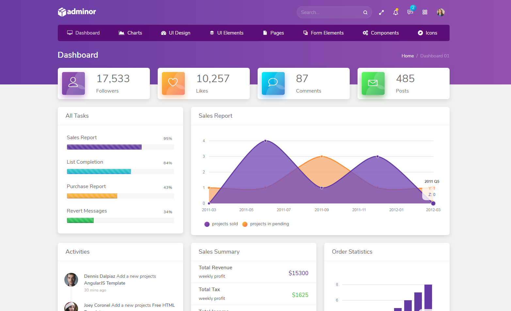
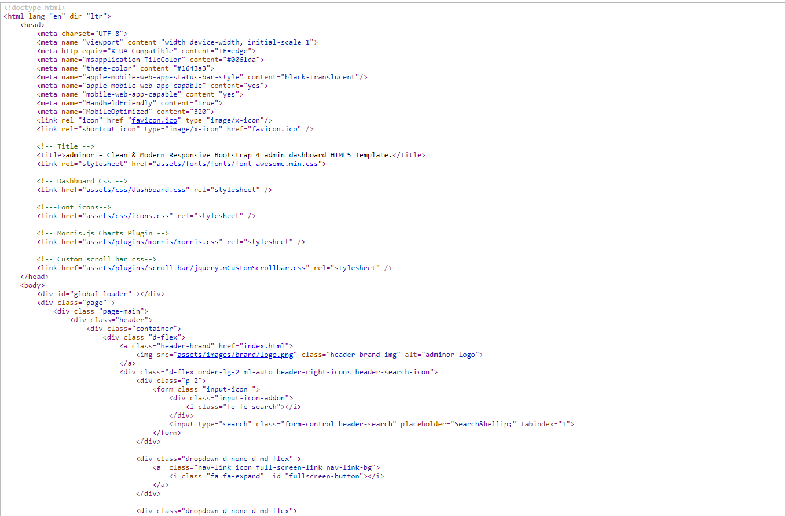
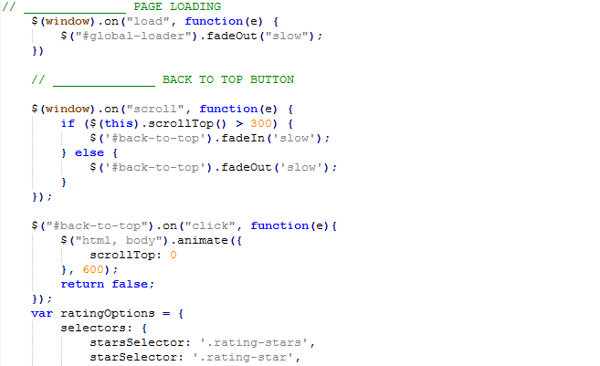

Please wait...
Thank you for purchasing our template. If you have any questions that are beyond the scope of this help file, please feel free to email at support@spruko.com
If you really like our work, design, performance and support then please don't forgot to rate us on Themeforest, it really motivate us to provide something better for you.
adminor - Clean & Modern Responsive Bootstrap4 admin dashboard HTML5 Template. Most of the elements are used for multipurpose admin panel usages. Very easy to change the code and redesign it quickly. It has lots of beautiful UI elements, widgets and more features included. This is the ideal template for your next dashboard or admin web app project. While you customize this beautiful Template you will feel very happily. This Template Includes 2000+ HTML Pages . More Versions are included.
Works on all major web browsers like Desktop, iPhone, iPad, Tablet and all other smart phone devices
We design this template based bootstrap 4 framework
35+ plugins we are included in this template
A fully responsive admin dashboard template
Very easy to customize this template
modern web technology HTML5 and CSS3
It has more number of widgets ,elements & charts,maps

HTML/ ├── assets/ ├── css/ ├── css-rtl/ ├── fonts/ ├── images/ ├── js/ ├── plugins/ ├── scss/ ├── scss-rtl/

adminor comes with power of SCSS. The css files can be generated from scss by simply following below steps:
Gulp is a JavaScipt streaming task runner. It automate many development tasks. Using gulp you can perform tasks like running a local server, minifying code, compilation, Browser sync ,optimizing images, etc... We are using gulp which allows to easily compilation of scss to csss. You can read it more about it here.
Please follow below steps to install and setup all prerequisites:
Make sure to have the Node.js installed & running in your computer. If you already have installed nodejs on your computer, you can skip this step, otherwise install nodejs on your computer,
Make sure to have the Gulp installed &
running in your computer. If you already have installed gulp on your computer, you can skip
this step. In order to install, just run command npm install -g gulp from
your terminal.
To setup, follow below mentioned steps:
Make sure to have all above prerequisites installed & running in your computer
Open your terminal, go to your folder and enter the command npm install. This
would install all required dependencies in node_modules folder.
After you finished with above steps, you can run the command to compile scss into css:
gulp
| Command | Description |
|---|---|
gulp
|
Runs the project locally, starts the development server and watches for any changes in your code, including your html, javascript, sass, etc. The development server is accessible at http://localhost:3000. |
gulp watch
|
In this template gulp watch command is for what ever changes made in scss folder, will watch and run an appropriate task.
All the CSS files under assets/css/ folder will be watched and upon changes made to these files, the styles task will be executed.
|
gulp dark
|
In this template gulp dark command is for what ever changes are made in style-dark.scss will be watched and the changes automatically updated in style-dark.css file in css folder.
|
gulp sidemenu
|
In this template gulp sidemenu command is for what ever changes are made in sidemenu.scss will be watched and the changes automatically updated in sidemenu.css file in css folder.
|
gulp darksidemenu
|
In this template gulp dark-sidemenu command is for what ever changes are made in dark-sidemenu.scss will be watched and the changes automatically updated in dark-sidemenu.css file in css folder.
|
gulp closed
|
In this template gulp closed command is for what ever changes are made in closed-sidemenu.scss will be watched and the changes automatically updated in closed-sidemenu.css file in css folder.
|
gulp darkclosed
|
In this template gulp darkclosed command is for what ever changes are made in dark-closed-sidemenu.scss will be watched and the changes automatically updated in dark-closed-sidemenu.css file in css folder.
|
gulp boxed
|
In this template gulp boxed command is for what ever changes are made in boxed.scss will be watched and the changes automatically updated in boxed.css file in css folder.
|
gulp darkboxed
|
In this template gulp darkboxed command is for what ever changes are made in dark-boxed.scss will be watched and the changes automatically updated in dark-boxed.css file in css folder.
|
| Command | Description |
|---|---|
gulp
|
Runs the project locally, starts the development server and watches for any changes in your code, including your html, javascript, sass, etc. The development server is accessible at http://localhost:3000. |
gulp watchrtl
|
In this template gulp watchrtl command is for what ever changes made in scss folder, will watch and run an appropriate task.
All the CSS files under assets/css-rtl/ folder will be watched and upon changes made to these files, the styles task will be executed.
|
gulp darkrtl
|
In this template gulp darkrtl command is for what ever changes are made in style-dark.scss will be watched and the changes automatically updated in style-dark.css file in css folder.
|
gulp sidemenurtl
|
In this template gulp sidemenurtl command is for what ever changes are made in sidemenu.scss will be watched and the changes automatically updated in sidemenu.css file in css folder.
|
gulp darksidemenurtl
|
In this template gulp darksidemenurtl command is for what ever changes are made in dark-sidemenu.scss will be watched and the changes automatically updated in dark-sidemenu.css file in css folder.
|
gulp closedrtl
|
In this template gulp closedrtl command is for what ever changes are made in closed-sidemenu.scss will be watched and the changes automatically updated in closed-sidemenu.css file in css folder.
|
gulp darkclosedrtl
|
In this template gulp darkclosedrtl command is for what ever changes are made in dark-closed-sidemenu.scss will be watched and the changes automatically updated in dark-closed-sidemenu.css file in css folder.
|
gulp boxedrtl
|
In this template gulp boxedrtl command is for what ever changes are made in boxed.scss will be watched and the changes automatically updated in boxed.css file in css folder.
|
gulp darkboxedrtl
|
In this template gulp darkboxedrtl command is for what ever changes are made in dark-boxed.scss will be watched and the changes automatically updated in dark-boxed.css file in css folder.
|
adminor custom.js is the main javascript file having all the js code. File is located in assets/js/ folder. This file code is also well formatted and section in different respective function names.
Along with this chart library based js code and js code are added in separate files for ease of use of user.

Google fonts are used in the template. They are as follows: Open Sans
Once again, thank you so much for purchasing this template. As I said at the beginning, I'd be glad to help you if you have any questions relating to this template.
If you really like our work, design, performance and support then please don't forgot to rate us on Themeforest, it really motivate us to provide something better.